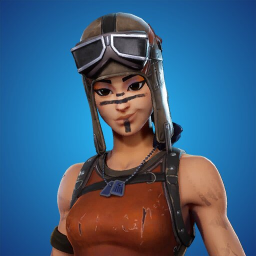

A Renegade Raider é uma das skins mais icônicas e procuradas do Fortnite, lançada na Season 1 do Capítulo 1,
durante o início do jogo em 2017.
Ela é famosa por sua exclusividade e raridade, pois só estava disponível para jogadores que alcançaram o nível
20 durante aquela temporada e, em seguida, adquiriram a skin na loja. Por ser uma das primeiras skins do jogo, a
Renegade Raider se tornou um símbolo de status entre os jogadores veteranos e é amplamente reconhecida na
comunidade.
História
A Renegade Raider não possui um grande enredo ou narrativa própria dentro do universo de Fortnite. la é uma
personagem que pertence ao "Grupo dos Renegados", um conjunto de skins que trazem temas de resistência e
sobrevivência.
Sua aparência de guerreira, com capacete de aviadora e roupas de combate, remete a uma estética militar, dando a
ela um visual forte e imponente.
Apesar de ser uma skin sem muitos detalhes de história, ela faz parte da "Era Original" de Fortnite, quando o
jogo estava começando a se estabelecer no cenário dos battle royales.
Habilidades
A Renegade Raider não tem habilidades especiais no jogo, uma vez que as skins não afetam a jogabilidade de
Fortnite. No entanto, devido à sua popularidade, muitos jogadores associam a skin com uma jogabilidade
experiente, já que ela era acessível apenas para quem já tinha algum tempo de jogo ou estava mais envolvido
com o conteúdo do início do Fortnite. Ao longo dos anos, a skin se tornou uma marca registrada de jogadores
veteranos, o que aumentou seu prestígio no jogo.
Caracteristicas
A Renegade Raider é uma skin feminina, com um visual robusto, mesclando elementos de aviadora e de guerreira.
Suas principais características são:
- Roupa de combate com uma jaqueta de couro e detalhes metálicos.
- Capacete de aviadora com óculos escuros, dando um ar de heroína desbravadora.
- Botas altas e cintos que complementam o visual de resistência.
- Cores: A skin tem uma paleta de cores em tons de marrom, verde e preto, com um toque de vermelho e
laranja, conferindo um visual agressivo e aventureiro.
Curiosidades
- Raridade: A Renegade Raider é uma das skins mais raras do Fortnite, já que foi uma das primeiras a ser
lançada e foi retirada da loja após a Season 1, tornando-a difícil de ser adquirida nos dias de hoje.
- Status de veterano: Jogadores que possuem essa skin são frequentemente vistos como "veteranos" do jogo,
sendo considerada uma das skins mais cobiçadas por aqueles que começaram a jogar Fortnite mais tarde.
- Retratação em outros eventos: Ao longo do tempo, a Renegade Raider se tornou um ícone da nostalgia
dentro do Fortnite, aparecendo em diversas formas em eventos e itens especiais do jogo, como em emotes
ou novos estilos.
- Outras versões: A skin ganhou uma versão alternativa chamada Aerial Assault Trooper, que segue o mesmo
estilo de aviadora, mas com um design um pouco diferente.